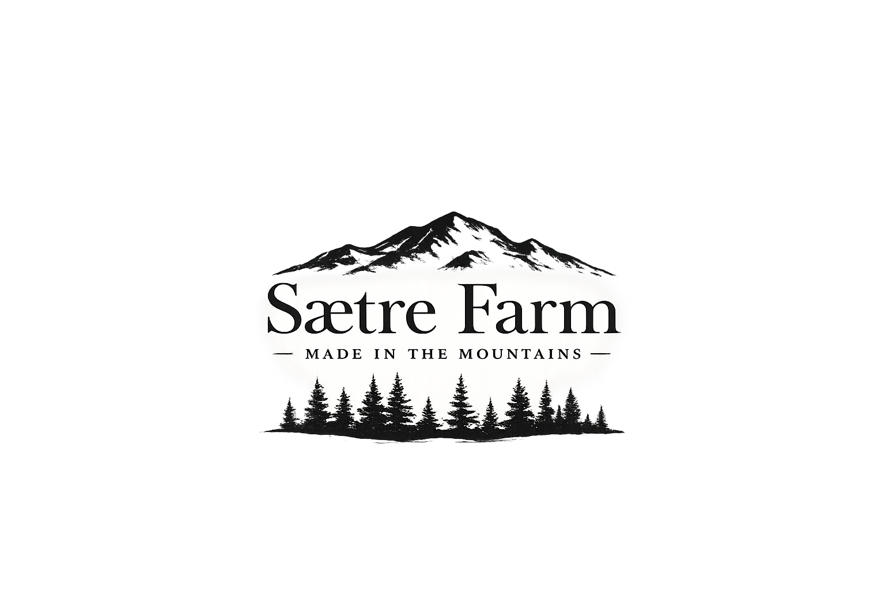

Lamb, sheepskin & handcraft from Juvsgrend
Nore og Uvdal · Numedalen · Norway
Our lambs graze freely all summer in the beautiful Juvsgrend valley, alongside their mothers, choosing for themselves what to eat from the open mountain terrain. Cleaner and more sustainable meat is hard to find. Sold directly to customers, local supermarkets and restaurants — fresh, butchered and vacuum packed, ready for the freezer.
We deliver along the Nore–Oslo route. SMS us at 958 49 107 or message us on Facebook to order.
The hides from our sheep are brought home and transformed in our workshop — The Makery. Traps, Christmas hearts, seat pads and beautiful sheepskin rugs, all made here on the farm. If you are expecting something from The Makery, get in touch so we can plan accordingly.
In winter our ewes come and go as they please — sleeping under the stars or in a warm straw bed, their choice. We built the flock from four orphan lambs we were given the first spring after buying the farm. This winter we had around 60 ewes. Every one of them has a name as well as an ear tag.
We are in Juvsgrend in the mountains above Nore. Get in touch before you come.